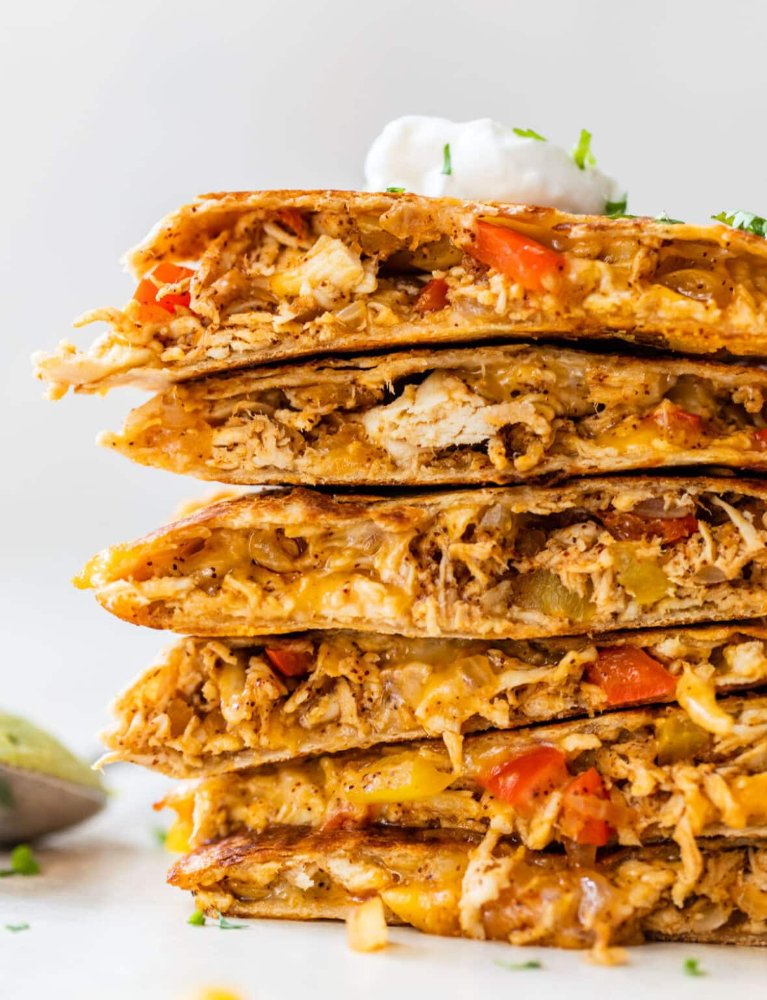

Quesadillas

Ingredients
Ingredients
- Large flour tortillas
- Grated cheese such as mild or sharp cheddar, or Monterey Jack
- Olive oil or butter
- Optional:
- Sliced mushrooms
- Green onions
- Black olives, sliced
- Fresh tomatoes, diced
- Chicken pieces
- Avocado
- Lettuce
- Apple cider vinegar
- Kosher salt
Instructions
- Heat the tortillas until air pockets form:
- Heat a large skillet (cast iron works great) on medium high heat. Add a small amount of oil (about 1/2 teaspoon) and spread it around the bottom of the pan with a spatula (you could use butter as well).
- Take one large flour tortilla and place it in the pan. Flip the tortilla over a few times, 10 seconds between flips. Air pockets should begin to form within the tortilla.
- Frying a tortilla in a skillet to make quesedillas.
- Add the cheese and other ingredients:
- When pockets of air begin to form, take a handful of grated cheese, sprinkle over the top of the tortilla, making sure that the cheese does not land on the pan itself.
- Add whatever additional ingredients you choose - green onion, sliced mushrooms, olives, tomatoes, etc. If you would like your quesadilla to be a chicken quesadilla, add some diced cooked chicken.
- Take care not to layer on the ingredients too thickly - this is a quesadilla, not a quiche!
- A tortilla topped with cheese in a skillet for a quesadilla recipe.
- Tomatoes and cheese on a skillet to make a quesadilla recipe.
- Lower the heat and cover pan:
- Reduce the heat to low and cover the pan. The pan should be hot enough by now to have plenty of residual heat to melt the cheese and brown the tortilla. If the quesadilla begins to smoke too much, remove from the heat.
- After a minute, check to see if the cheese is melted. If not, return the cover and keep checking every minute until the cheese is melted.
- A tortilla in a skillet to show how to make quesadillas.
- Fold the tortilla over:
- When the cheese is sufficiently melted, use a spatula to lift up one side of the quesadilla and flip over the other side, as if you were making an omelette.
- The tortilla should by now be browned slightly. If it is not browned, turn the heat up to high and flip the quesadilla over every 10 seconds or so until it gets browned.
- A skillet with a tortilla folded over to show how to make quesadillas.
- Remove quesadilla from pan and cut into wedges:
- To make the lettuce to accompany the quesadilla, thinly slice some iceberg lettuce. Sprinkle some cider vinegar on it and some salt.
- Serve with the lettuce, salsa, sour cream, and guacamole.
- A cheese quesadilla on a plate with toppings.